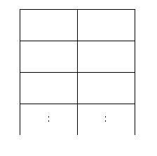

어떤 동물원에 가로로 두칸 세로로 N칸인 아래와 같은 우리가 있다.

이 동물원에는 사자들이 살고 있는데 사자들을 우리에 가둘 때, 가로로도 세로로도 붙어 있게 배치할 수는 없다. 이 동물원 조련사는 사자들의 배치 문제 때문에 골머리를 앓고 있다.
동물원 조련사의 머리가 아프지 않도록 우리가 2*N 배열에 사자를 배치하는 경우의 수가 몇 가지인지를 알아내는 프로그램을 작성해 주도록 하자. 사자를 한 마리도 배치하지 않는 경우도 하나의 경우의 수로 친다고 가정한다.
첫째 줄에 우리의 크기 N(1≤N≤100,000)이 주어진다.
첫째 줄에 사자를 배치하는 경우의 수를 9901로 나눈 나머지를 출력하여라.
Input:
4
Output:
41